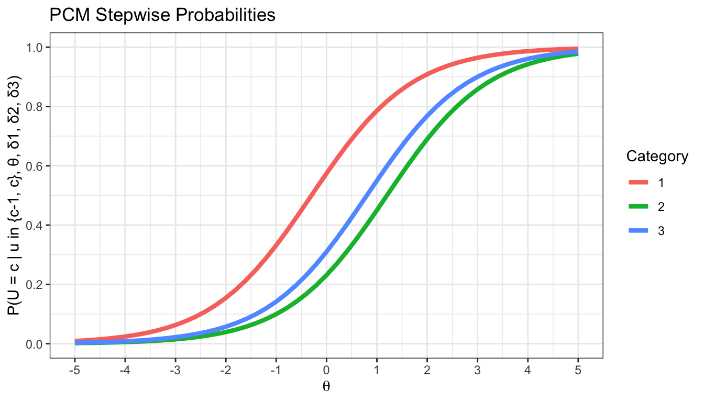
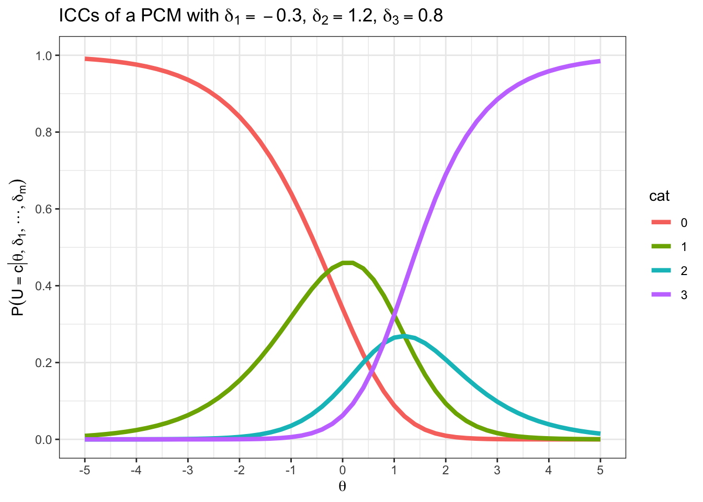
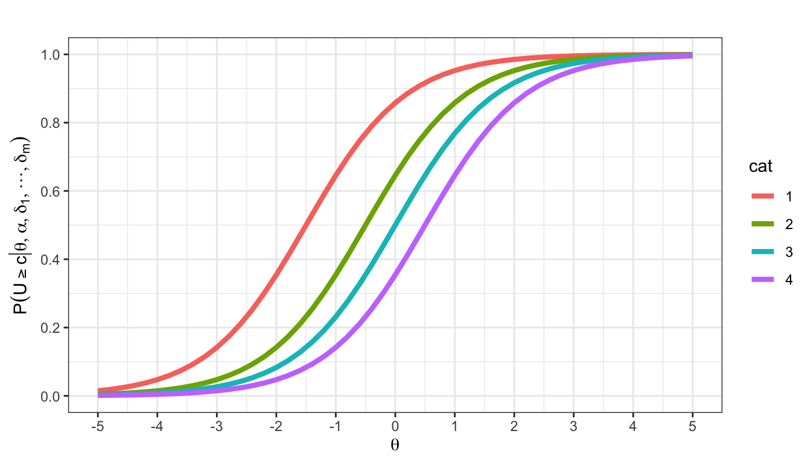
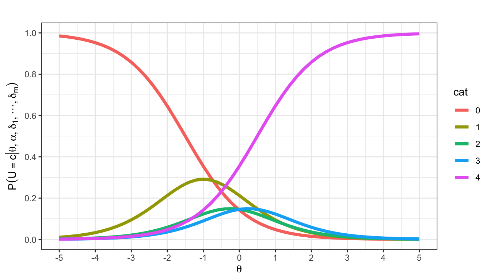
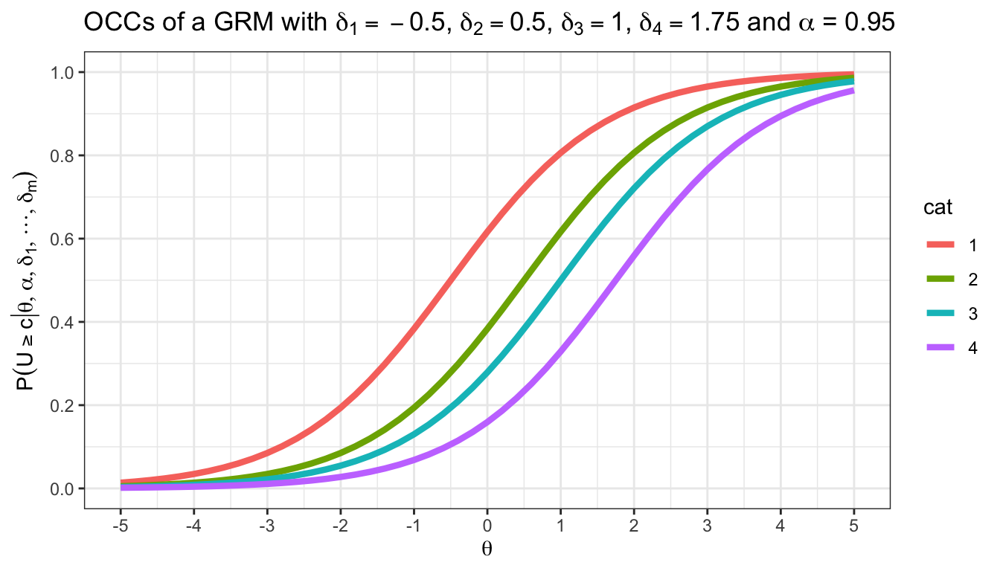
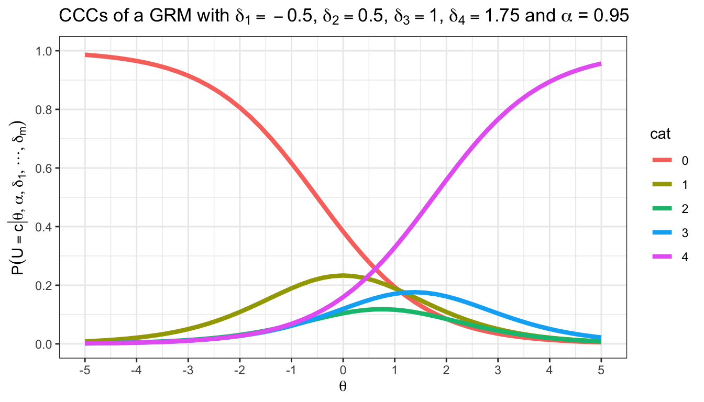

IRT-Modelle für Polytome Daten
Bisher haben wir IRT-Modelle für dichotome Daten behandelt. Das heißt die Datenmatrix enthielt nur Nullen und Einsen. Im Folgenden beschäftigen wir uns mit Modellen, die polytome Antwortformate modellieren können. Vorab möchten wir aber noch einem häufigen Missverständnis vorbeugen. Da IRT-Modelle für dichotome Daten oft so eingeführt werden, dass eine \(0\) in der Datenmatrix eine nicht gelöste Aufgabe repräsentiert und eine \(1\) eine gelöste Aufgabe, und da IRT-Modelle für polytome Daten oft so eingeführt werden, dass sie das Modellieren einer Likert-Skala ermöglichen, kann schnell das Missverständnis entstehen, dichotome IRT-Modelle seien nur für Leistungstests und polytome IRT-Modelle seien nur für Persönlichkeitstests geeignet. Dem ist nicht so. Sie können mit den behandelten IRT-Modellen für dichotome Daten, aber auch mit den im Folgenden behandelten IRT-Modellen für polytome Daten sowohl Persönlichkeitstests, wie auch Leistungstests modellieren. Wenn der Personenparameter \(\theta\) auch im Personlichkeitskontext als “Fähigkeitsparameter” bezeichnet wird, ist das nur der historischen Entwicklung, aber nicht einer Limitation der Modelle geschuldet.
[Generalized] Partial Credit Model ([G]PCM)
\(n = 4\) Personen bearbeiten \(m = 3\) Items im 4-Punkt Ratingskalenformat. Notieren Sie eine mögliche Datenmatrix, \(\mathbf{U}\), für diesen Fall.
Lösung
\[\begin{equation} \mathbf{U} = \begin{bmatrix} 0 & 1 & 2 \\ 3 & 0 & 1 \\ 2 & 3 & 0 \\ 1 & 2 & 3 \end{bmatrix} \end{equation}\]
Sie haben in der Vorlesung das PCM kennengelernt. Im PCM wird angenommen, dass die Wahrscheinlichkeiten für aufeinanderfolgende Schritte der Ratingskala Rasch-Modellen folgen:
\[\begin{equation} P(U_{ij} = c | u_{ij} \in \{c-1, c\}, \theta_i, \delta_{jc}) = \frac{ exp( \theta_i - \delta_{jc} ) }{ 1 + exp( \theta_i - \delta_{jc} ) } \end{equation}\]
Was bedeuten die folgenden Wahrscheinlichkeiten inhaltlich?
- \(P(U_{ij} = 3 | u_{ij} \in \{3-1, 3\}, \theta_i, \delta_{j3})\)
- \(P(U_{ij} = c | u_{ij} \in \{c-1, c\}, \theta_i, \delta_{jc})\), mit \(c = 1\)
Lösung
Die Wahrscheinlichkeit Kategorie \(3\) statt Kategorie \(2\) zu wählen.
Die Wahrscheinlichkeit, Kategorie \(c = 1\) statt der Kategorie \(c-1 = 0\) zu wählen.
Gegeben ist ein Item mit \(\boldsymbol{\delta} = [-0.3, 1.2, 0.8]\). Die folgende Abbildung zeigt die schrittweisen Wahrscheinlichkeiten, die nächstmögliche Antwortkategorie zu bevorzugen.
Berechnen Sie die Wahrscheinlichkeit für den Sprung zwischen den Kategorien (1) \(0\) und \(1\), (2) \(1\) und \(2\), (3) \(2\) und \(3\) bei \(\theta = 0\). Überprüfen Sie Ihr Ergebnis zunächst anhand der Abbildung der schrittweisen Antwortwahrscheinlichkeiten.
Lösung
Kategorie 1 über Kategorie 0 bevorzugen:
\[\begin{equation} P(U_{ij} = 1 | u_{ij} \in \{0, 1\}, \theta_i, \delta_{j1}) = \frac{ exp( 0.3 ) }{ 1 + exp( 0.3 ) } \approx .57 \end{equation}\]
teachIRT::p_rasch(theta = 0, beta = -0.3)[1] 0.5744425Kategorie 2 über Kategorie 1 bevorzugen:
\[\begin{equation} P(U_{ij} = 2 | u_{ij} \in \{1, 2\}, \theta_i, \delta_{j2}) = \frac{ exp( -1.2 ) }{ 1 + exp( -1.2 ) } \approx .23 \end{equation}\]
teachIRT::p_rasch(theta = 0, beta = 1.2)[1] 0.2314752Kategorie 3 über Kategorie 2 bevorzugen:
\[\begin{equation} P(U_{ij} = 2 | u_{ij} \in \{2, 3\}, \theta_i, \delta_{j3}) = \frac{ exp( -0.8 ) }{ 1 + exp( -0.8 ) } \approx .31 \end{equation}\]
teachIRT::p_rasch(theta = 0, beta = 0.8)[1] 0.3100255Aus der Gleichung bedingter Wahrscheinlichkeiten im PCM lassen sich unbedingte Kategorienwahrscheinlichkeiten herleiten.
\[\begin{equation} P(U_{ij} = c | \theta_i, \boldsymbol{\delta}_j) = \frac{ exp( \sum_{k = 0}^{c} (\theta_i - \delta_{jk}) ) }{ \sum_{l = 0}^{m^{\star}_j}[exp(\sum_{k = 0}^{l} (\theta_i - \delta_{jk}))] } \end{equation}\]
mit \(\sum_{k = 0}^{0} (\theta_i - \delta_{jk}) \equiv 0\).
Suchen die Formel für unbedingte Kategorienwahrscheinlichkeiten im PCM in der Formelsammlung.
Berechnen Sie \(P(U_{ij} = 2 | \theta_i, \boldsymbol{\delta})\) für die Parameterwerte aus Aufgabe (c) bei \(\theta = 1\).
Lösung
Gegeben sind der Vektor der Schwellenparameter \(\boldsymbol{\delta} = [-0.3, 1.2, 0.8]\) und der Fähigkeitsparameter \(\theta = 1\).
Die Skala ist eine \(4\)-Punkt Skala mit möglichen Werten \(U_{ij} \in \{0, 1, 2, 3\}\).
In den Beispielen hat eine Person in Kategorie \(2\) geantwortet.
\[\begin{equation} \begin{split} P(U_{ij} = 2 | \theta, \boldsymbol{\delta}) \\\\ = \frac{ exp(\sum_{k = 0}^{c} (\theta - \delta_j)) }{ \sum_{l = 0}^{m_j^*} [exp(\sum_{k = 0}^{l} (\theta - \delta_j))] }\\\\ = \frac{ exp(0 + (1 + 0.3) + (1 - 1.2)) }{ \begin{split} exp(0)\\ + exp(0 + (1 + 0.3))\\ + exp(0 + (1 + 0.3) + (1 - 1.2))\\ + exp(0 + (1 + 0.3) + (1 - 1.2) + (1 - 0.8)) \end{split} }\\\\ = \frac{exp(1.1)}{exp(0) + exp(1.3) + exp(1.1) + exp(1.3)}\\ \\\\ \approx 0.265 \end{split} \end{equation}\]
p <- teachIRT::p_pcm(
theta = 1,
delta = c(-0.3, 1.2, 0.8)
)
print(p[3])[1] 0.2648532Falls Sie bei der vorherigen Aufgabe in die Lösung schauen mussten, haben wir hier noch einige Parameterwerte mit Lösungen gesammelt. Diese können Sie zum Üben bearbeiten. Falls Sie sich mit der Formel für Kategorienwahrscheinlichkeiten im PCM bereits sicher fühlen, können Sie diese Aufgabe aber auch problemlos überspringen.
Berechnen Sie mit Hilfe des PCM:
\(P(U_{ij} = 1 | \theta_i = -1, \boldsymbol{\delta} = [-0.3, 1.2, 0.8])\)
\(P(U_{ij} = 4 | \theta_i = 3, \boldsymbol{\delta} = [1, 0.8, 1.5, 2.1])\)
\(P(U_{ij} = 2 \mid \theta_i = 0, \boldsymbol{\delta} = [-0.5, 0.7, 1.3])\)
\(P(U_{ij} = 3 \mid \theta_i = 1.5, \boldsymbol{\delta} = [-1, 0.5, 1.2, 2])\)
\(P(U_{ij} = 0 \mid \theta_i = -2, \boldsymbol{\delta} = [0.2, 1, 1.7])\)
Lösung
\(P(U_{ij} = 1 | \theta_i = -1, \boldsymbol{\delta} = [-0.3, 1.2, 0.8]) \approx .32\)
teachIRT::p_pcm(theta = -1, delta = c(-0.3, 1.2, 0.8))[2][1] 0.3181804\(P(U_{ij} = 4 | \theta_i = 3, \boldsymbol{\delta} = [1, 0.8, 1.5, 2.1]) \approx .66\)
teachIRT::p_pcm(theta = 3, delta = c(1, 0.8, 1.5, 2.1))[5][1] 0.6628224\(P(U_{ij} = 2 \mid \theta_i = 0, \boldsymbol{\delta} = [-0.5, 0.7, 1.3]) \approx .22\)
teachIRT::p_pcm(theta = 0, delta = c(-0.5, 0.7, 1.3))[3][1] 0.2218433\(P(U_{ij} = 3 \mid \theta_i = 1.5, \boldsymbol{\delta} = [-1, 0.5, 1.2, 2]) \approx .38\)
teachIRT::p_pcm(theta = 1.5, delta = c(-1, 0.5, 1.2, 2))[4][1] 0.3784651\(P(U_{ij} = 0 \mid \theta_i = -2, \boldsymbol{\delta} = [0.2, 1, 1.7]) \approx .90\)
teachIRT::p_pcm(theta = -2, delta = c(0.2, 1, 1.7))[1][1] 0.8956913In der letzten Aufgabe haben Sie durch das PCM implizierte Wahrscheinlichkeiten berechnet, dass eine Person mit einem exakten Fähigkeitsparameter in einer exakten Kategorie antwortet. Die folgende Abbildung plottet die Kategorienwahrscheinlichkeiten für alle Kategorien und für ein festgelegtes Intervall von Fähigkeiten.
teachIRT::icc_pcm(delta = c(-0.3, 1.2, 0.8))
Versuchen Sie die zuvor berechnete Wahrscheinlichkeit \(P(U_{ij} = 2 | \theta, \boldsymbol{\delta})\) in der Abbildung wiederzufinden.
Lösung
Blaue Kurve bei \(1\) auf der x-Achse ablesen
Die Schwellenparameter des Items in Aufgabe (c) sind nicht geordnet. Welche Besonderheit ergibt sich daraus für die abgebildeten CCCs?
Lösung
Kategorie 2 ist an keiner Stelle der Fähigkeitsachse die modale Kategorie.
Lesen Sie die Wahrscheinlichkeit ab, dass eine Person mit \(\theta = -1.5\) die niedrigste Antwortkategorie wählt.
Lösung
Man kann in etwa .75 ablesen.
Den genauen Wert können Sie händisch oder mit teachIRT ausrechnen:
teachIRT::p_pcm(theta = -1.5, delta = c(-0.3, 1.2, 0.8))[1][1] 0.755592Sie können die Abbildung mit dem Befehl teachIRT::icc_pcm(delta = c(-0.3, 1.2, 0.8)) nachstellen. Probieren Sie aus, was passiert, wenn Sie die Werte verändern.
Der mirt Befehl, um ein PCM zu schätzen ist mirt::mirt(data , 1, itemtype = "Rasch"). Das ist der gleiche Befehl, den man verwendet, um ein Rasch-Modell mit mirt zu schätzen.
Warum ist die Benennung “Rasch” auch beim PCM sinnvoll?
Wie erkennt mirt, dass es sich um ein PCM handeln muss?
Lösung
Das Rasch-Modell ist im PCM genestet. Wenn man das PCM mit zwei Kategorien spezifiziert wird es zum klassischen Rasch-Modell für dichotome Daten. Die zentralen Eigenschaften des Rasch-Modells bleiben im PCM erhalten.
Die Anzahl an Kategorien erkennt
mirtan der Datenmatrix. Da das Rasch-Modell ein Spezialfall des PCM ist, mussmirtallerdings nicht das eine oder andere Modell wählen.
Plotten Sie ICCs für ein GPCM mit Hilfe des Befehls teachIRT::icc_gpcm(alpha = 0, delta = c(-2.5, 0, 2.5)).
Erhöhen Sie sukzessive den \(\alpha\)-Parameter. Wie verändern sich die dargestellten Funktionen und was bedeutet die Veränderung des Parameters inhaltlich?
Graded Response Model
Ein GRM wurde genutzt, um ein Ratingskalenitem zu skalieren. Es ergeben sich die folgenden OCCs und CCCs:


\(\alpha = 1.2\). Lesen Sie die übrigen Itemparameter ab.
Lösung
\(\alpha = 1.2\)
\(\mathbf{\delta} = [-1.5, -0.5, 0, 0.5]\)
\(n = 200\) Testand:innen beantworten das Item. Die Testand:innen haben Fähigkeiten, die der Verteilung \(N(1, 0.5)\) folgen. Welche Kategorie werden die Testand:innen erwartungsgemäß am häufigsten wählen?
Lösung
Kategorie 4, da sie im Bereich der Verteilung der Personenparameter die höchste Kategorienwahrscheinlichkeit hat.
Man kann das auch in einer kleinen Simulation überprüfen:
# Einen seed wählen, damit Sampling replizierbar ist
set.seed(434)
# Fähigkeiten simulieren
n <- 200
theta <- rnorm(n = n, mean = 1, sd = 0.5)
# Itemparameter festlegen (siehe Lösung der vorherigen Aufgabe)
alpha <- 1.2
delta <- c(-1.5, -0.5, 0, 0.5)
# Einen leeren Antwortvektor initialisieren
X <- rep(NA, n)
# Für jede Person eine Antwort anhand der Antwortwahrscheinlichkeiten simulieren
for (i in 1:n) {
# Kategorienwahrscheinlichkeiten der Person i berechnen
prob <- teachIRT::p_grm(
theta = theta[i],
alpha = alpha,
delta = delta
)
# Eine Kategorie ziehen
X[i] <- sample(0:length(delta), 1, prob = prob)
}
# Die beobachteten Antwortwahrscheinlichkeiten anzeigen
table(X) / nX
0 1 2 3 4
0.055 0.065 0.085 0.130 0.665 Wie erwartet wurde Kategorie \(4\) am häufigsten gewählt.
Zum Weiterdenken:
Sie wissen, wie man die Wahrscheinlichkeit einer Kategorie an einem Punkt der \(\theta\)-Achse berechnet. In der letzten Aufgabe sollten Sie aber herausfinden, welche Kategorie am häufigsten gewählt wird, wenn Sie Fähigkeiten interessieren, die aus einer Verteilung stammen. Im vorgegebenen Fall konnte man das graphisch anhand der CCCs abschätzen. Wie könnten Sie vorgehen, wenn die visuelle Inspektion keine eindeutige Antwort liefert oder Sie exakte Wahrscheinlichkeiten gegeben einer Verteilung von Personenparametern berechnen möchten? Welche Kategorie würde zum Beispiel erwartungsgemäß am häufigsten gewählt, wenn die \(\theta\)-Werte aus der Verteilung \(N(0.25, 0.75)\) stammen?
Eine Person hat eine latente Fähigkeit von \(\theta = 1\). Lesen Sie so genau Sie können die folgenden Werte ab:
- Die Wahrscheinlichkeit, dass die Person in der niedrigsten Kategorie antwortet
- Die Wahrscheinlichkeit, dass die Person mindestens in der niedrigsten Kategorie antwortet
- \(P(U = 3 | \theta = 1, \boldsymbol{\delta})\)
- \(P(U \geq 1 | \theta = 1, \boldsymbol{\delta})\)
Die OCCs und CCCs sind gegeben:


Lösung
Wir berechnen die Werte zur Kontrolle exakt.
- Die Wahrscheinlichkeit, dass die Person in der niedrigsten Kategorie antwortet
theta <- 1
alpha <- 0.95
delta <- c(-0.5, 0.5, 1, 1.75)
teachIRT::p_grm(theta, alpha, delta)[1][1] 0.1938789- Die Wahrscheinlichkeit, dass die Person mindestens in der niedrigsten Kategorie antwortet
Das müssten wir eigentlich nicht berechnen. Gegeben, dass die Person überhaupt eine Antwort gibt, wird sie immer mindestens in der niedrigsten Kategorie antworten.
teachIRT::p_step_grm(theta, alpha, delta)[1][1] 1- \(P(U = 3 | \theta = 1, \boldsymbol{\delta})\)
teachIRT::p_grm(theta, alpha, delta)[4][1] 0.1709533- \(P(U \geq 1 | \theta = 1, \boldsymbol{\delta})\)
teachIRT::p_step_grm(theta, alpha, delta)[2][1] 0.8061211Suchen Sie die Formel zur Berechnung von Kategorienwahrscheinlichkeiten im GRM in der Formelsammlung. Berechnen Sie mit Hilfe der Formel \(P(U = 4 | \theta = 0, \alpha = 1.5, \boldsymbol{\delta} = [-2, -0.5, 1, 1.2])\).
Lösung
\(P(U = 4 | \theta = 0, \alpha = 1.5, \boldsymbol{\delta} = [-2, -0.5, 1, 1.2])\)
\(=P^*(U \ge 4) - 0\)
\(=\frac{1}{1 + e^{-\alpha(\theta - \delta_4)}}\) (verkürzte Form mit \(\frac{e^{x}}{1 + e^{x}} = \frac{1}{1 + e^{-x}}\) für alle \(x \in \mathbb{R}\))
\(=\frac{1}{1 + e^{-1.5(0 - 1.2)}}\)
\(\approx .14\)
Berechnung in teachIRT:
theta = 0
alpha = 1.5
delta = c(-2, -0.5, 1, 1.2)
teachIRT::p_grm(theta, alpha, delta)[5][1] 0.1418511